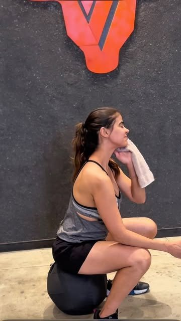
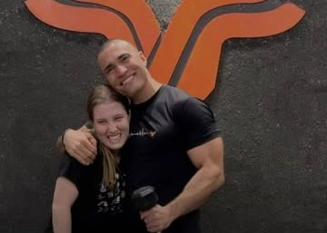
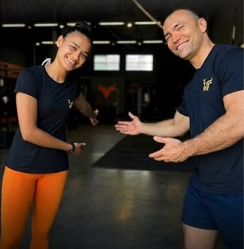

Treine forte hoje. E amanhã também.
Funcional e condicionamento no Centro de Pedro Leopoldo, com um professor ao lado em cada repetição.

Treinos
Técnica e segurança em primeiro lugar, para emagrecer, ganhar massa ou só voltar a se mexer.
Funcional e condicionamento
Aulas em turma com o treino adaptado ao seu nível. Quem está começando treina junto com quem já treina há anos.
Aula personalizada
Acompanhamento repetição por repetição, com foco no seu objetivo e nos seus limites.
Kids
Movimento, coordenação e diversão para as crianças. idade e horário a confirmar

Você nunca treina sozinho
Tem sempre um professor ao lado, ajustando a técnica e a carga para você evoluir sem se machucar.
- Correção de cada movimento
- Intensidade certa para o seu condicionamento
- Um ambiente sem comparação entre alunos
Resultados
Histórias de alunos contadas no Instagram da Yutoro. autorização dos alunos
"Perdi a ansiedade, a insônia, 28 kg e muito mais, mas ganhei saúde, disposição, autoestima e qualidade de vida."
A Isabela ganhou 13 kg de massa muscular em um ano, com técnica, ajuste de intensidade e paciência.
A Camilla acabou com a dor lombar que atrapalhava o dia a dia, com fortalecimento e mobilidade.
O que dizem no Google
29 avaliações, todas com 5 estrelas, em outubro de 2026.
★★★★★
Melhor Cross de Pedro Leopoldo/região! Não se trata apenas de um box de CrossFit, mas de uma comunidade acolhedora e encorajadora, que torna cada treino divertido e desafiador em perfeita harmonia. Recomendo para quem busca melhorar sua forma física e se superar a cada dia. Parabéns a toda a equipe Yutoro!
★★★★★
Melhor box! A atenção e profissionalismo do Rafa tornam cada treino uma experiência incrível. Estou muito satisfeita com o suporte e a dedicação, oque faz com que me sinta mais motivada para alcançar meus objetivos. Qualidade excepcional!
★★★★★
Pra quem busca excelência nos treinos, esse é o lugar certo! Rafael é um coach dedicado e atencioso que te direciona muito bem, fazendo adaptações para atender cada aluno com segurança. Box sensacional!!!!!
★★★★★
Já treinei em alguns box, porém só na YUTORO que de verdade aprendi a gostar de atividade física. Coach extremamente técnico, evitando lesões! E o melhor, a turma parece que é selecionada dedo, galera nota milll..
★★★★★
Academia incrível, bem equipada, turma amigável, metodologia de trabalho irretocável, com foco na segurança dos alunos, o que, na minha opinião, é o grande diferencial da Yutoro. Coach super capaz, responsável e atencioso.
★★★★★
A melhor experiência que tive com atividade física,o Rafa é atencioso, sabe o tempo e o potencial de cada aluno, o lugar tem uma estrutura espetacular, um box que dá gosto de exercitar, e uma turma maravilhosa.
★★★★★
Excelente Box! O ambiente é excelente, sem contar com o professor Rafael, muito atencioso, prestativo, muito paciente em passar todas as técnicas com segurança.
★★★★★
Um box diferenciado, preza pela técnica e pela segurança dos alunos em primeiro lugar. Esse lugar que mudou minha vida e minha rotina de atividades físicas! Recomendo 1000 vezes!
★★★★★
Melhor CrossFit da cidade! Ambiente excelente. Além de treinar, você aprende muito sobre a importância dos exercícios para a saúde.
★★★★★
Ambiente familiar, o treinador sempre presente na hora dos exercícios, explicação e exemplo nos exercícios, companheiros de treinos sempre incentivam nos treinos.
★★★★★
Sensacional! Atendimento personalizado, todo cuidado para que você não lesione nas aulas e promove um alcance rápido de objetivos com segurança. Sem igual.
★★★★★
Sensacional! Simplesmente o MELHOR crossfit da região: ambiente familiar e amigável!
★★★★★
Melhor box!! Preza pela segurança e na qualidade do treinamento!! Professor excelente! Um exemplo para os alunos!!
★★★★★
Melhor Box da cidade! Tudo feito com muita segurança e acompanhamento personalizado.
★★★★★
Melhor CrossFit! Muiiita técnica com o melhor o professor! Sempre a segurança em primeiro lugar
★★★★★
Melhor box. Melhor crossfit da cidade. Melhor cuidado com a sua saúde. Recomendo.
★★★★★
Muita dedicação, técnica, profissionalismo, conhecimento, atenção, motivação e qualidade em cada treino e com cada um dos alunos.
★★★★★
O melhor Box da vida!! Técnica, segurança, acolhimento e os melhores amigos ❤️
★★★★★
Box ímpar!!! Coach Rafael super dedicado e motivador!!!
★★★★★
Esse Box tem uma energia incrível. O melhor Box de Pedro Leopoldo!!!
★★★★★
Lugar, agradável, familiar e um acompanhamento impecável em todos os exercícios que realizamos!
★★★★★
Box top demais. Rafael sempre atencioso.
★★★★★
Ótimo treinamento! Professor qualificado, turma animada e amiga!!
★★★★★
Excelente coach, turma top!
★★★★★
Box muito Top. Muito organizado.
★★★★★
O melhor box da vidaaaaaaaaaaa
★★★★★
Qualidade em tudo! Professor extremamente qualificado.
★★★★★
Melhor Cross de todos! 🚀
Horários
Turmas de manhã cedo e à noite. O check-in é feito pelo app Tecnofit Box.
- Seg05h06h07h08h18h19h20h
- Ter06h07h08h18h19h20h
- Qua06h07h08h18h19h20h
- Qui06h07h08h18h19h20h
- Sex05h06h07h08h18h19h20h
- SábSem turmas
- DomSem turmas
Cada horário é o início da turma.
Sua primeira aula
Responda três perguntas e continue a conversa no WhatsApp com tudo já escrito.

Dúvidas
Nunca treinei. Consigo acompanhar?
Sim. O treino é adaptado ao seu nível e tem sempre um professor ao lado, ajustando a técnica e a carga.
Como funciona a aula experimental?
Você agenda pelo WhatsApp e faz uma aula com a turma, acompanhado de perto. valor e duração a confirmar
Tem aula para criança?
Sim, tem aula Kids. idade e horário a confirmar
Quais são os horários?
Segunda e sexta: 5h, 6h, 7h, 8h, 18h, 19h e 20h. Terça, quarta e quinta: 6h, 7h, 8h, 18h, 19h e 20h. Sábado e domingo não há turmas. O check-in é pelo app Tecnofit Box.
Onde estamos
R. José Píres de Araújo, 363, Centro
Pedro Leopoldo, MG, 33600-000
(31) 98267-9905